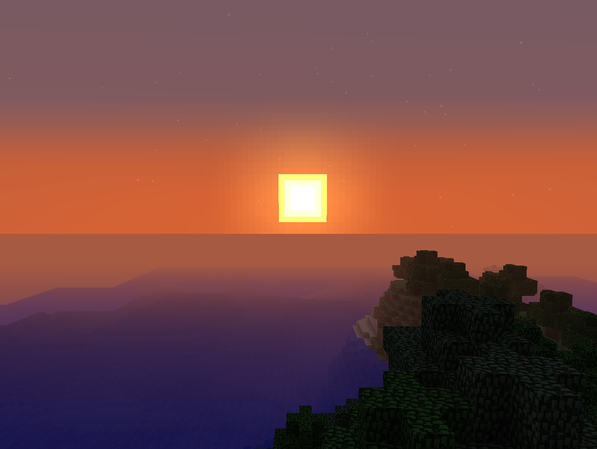
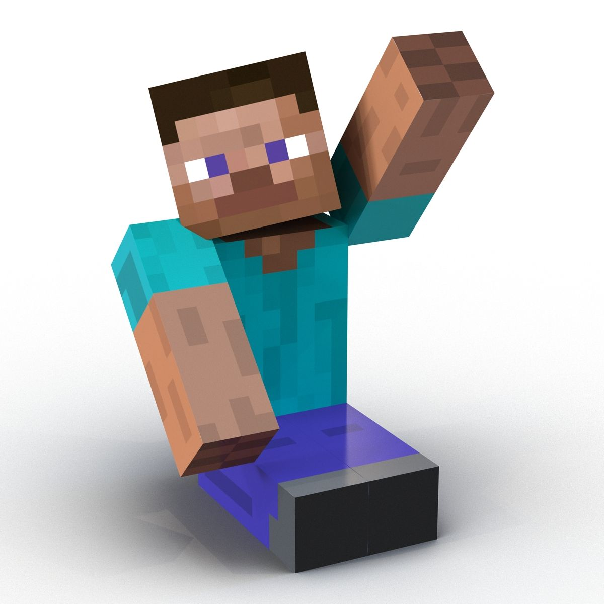
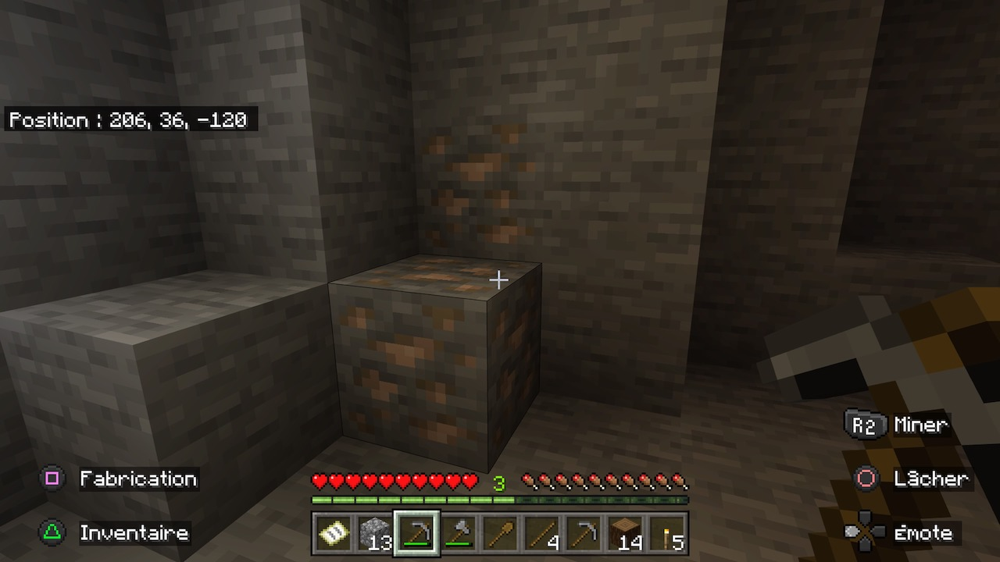
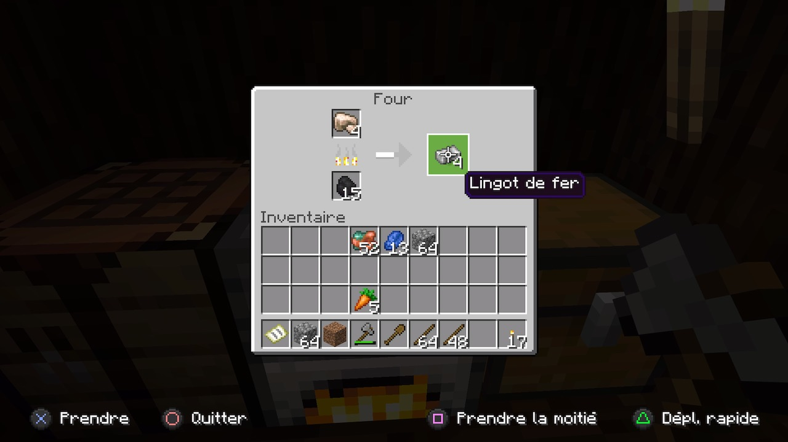

Introduction
Mode survie ou créatif?
Bienvenue!!! Vous êtes à présent dans le site que j'ai enfin terminé et je peux enfin vous présenter. Pour toutes
les personnes qui ont besoin d'aide en mode survie (ou créatif) venez jeter un petit coup d'oeil, peut-être que
mon site vous aidera, il m'a déjà bien aidé. Peut-être, mon amie, avec qui j'ai fait une si belle survie, tu
trouveras des informations dont tu as besoin dans ce site.
Passer la première nuit
Survivre à la première nuit
Survivre dans la nuit
Créer des objets
Passer la première nuit est certainement le plus dur pour commencer Minecraft,je suis moi-même morte plusieurs
fois, ne sachant la passer, c'est pour cela que je pense que la première nuit est la plus rude, jusqu'a trouver
un lit. Si vous avez assez de bois, vous pouvez fabriquer une table de craft,afin de fabriquer une pioche en
bois. Lorsque la nuit tombe, il faut vite creuser un trou de minimum 3 blocs (je vous conseille tout de même
d'en faire plus) puis essayez de miner, afin d'avoir de la pierre, pour miner plus rapidement.
2ème étape: charbon.
Bien qu'il soit très important, le charbon, obtenu sur des minerais de charbon, n'est pas très difficile à trouver
en réalité, sur Minecraft. Vous pouvez tout aussi bien apercevoir des minerais de charbon dans les mines qu'à la
surface ou sous l'eau. Néanmoins, si vous n'en avez pas vu en scrutant les alentours, je vous recommande de vous
rendre dans des mines ou bien d'en creuser vous-même, cela sera plus simple et plus rapide.
Le minerai de charbon est assez facile à distinguer. Celui-ci ressemble fortement à la pierre, à un détail près : le
cube est gris, mais possède des petits carrés noirs en son sein (comme sur l'image ci-dessus). Généralement, vous
trouverez plusieurs minerais de charbon collés les uns aux autres. Ainsi, n'hésitez pas à miner tout autour d'un
bloc de minerai, pour récupérer un maximum de charbon.
Remarquons que le minerai de charbon peut être miné avec n'importe quelle pioche. Néanmoins, utiliser une pioche en
fer, en or ou en diamant réduira le temps de minage, et ce de façon considérable. Autrement, vous pouvez fabriquer
du charbon de bois. Ce n'est absolument pas compliqué. Maintenant que vous possédez un four, mettez-vous en quête de
bois. Utilisez votre pioche sur les troncs des arbres, dans les alentours, afin de récupérer des troncs. Ensuite,
utilisez un établi pour fabriquer des planches à partir des troncs préalablement récupérés. Par exemple, si vous
avez 4 troncs de chêne, vous pourrez crafter 4 planches en chêne. Néanmoins, veillez à garder quelques troncs bruts.
À partir du moment où vous avez plusieurs troncs de bois et planches dans votre inventaire, interagissez avec votre
four et placez les éléments (ici, bois tropical) comme indiqué ci-dessous. Vous pouvez à présent faire cuire des
objets, de la viande.
3ème étape: Fer.
Le fer... Pourtant indispensable, on a parfois du mal à en trouver.
Sur Minecraft, le fer (ou « fer brut »), obtenu sur des minerais de fer, n'est pas très difficile à obtenir. Il ne
s'agit pas d'une matière très commune, mais elle se trouve tout de même assez facilement. C'est, notamment, en vous
rendant dans des mines ou en en creusant une vous-même, que vous en récupérerez. De notre côté, nous avons obtenu du
minerai de fer à la couche 36 (Y=36) ou encore à celle -17 (Y=-17). De façon générale, ce minerai peut être trouvé
entre les couches 320 à -64. Ce bloc se distingue assez facilement des autres : bien qu'il soit gris, il contient
des petits carrés jaunes, avec une teinte orangée, en son sein.
Notons que vous trouverez, généralement, plusieurs minerais de fer collés les uns aux autres. Ainsi, n'hésitez pas à
miner tout autour d'un bloc de minerai, pour récupérer un maximum de fer.
Notons que le fer doit être miné avec une pioche en pierre, ou supérieure. Évidemment, utiliser une pioche en or ou
en diamant est tout à fait possible et vous permettra, d'ailleurs, de gagner du temps.
Après avoir récolté du fer, vous pourrez transformer ladite ressource en lingots. Pour cela, vous aurez
nécessairement besoin d'un four. Si vous ne savez pas comment en fabriquer un, sur Minecraft, voici la recette
(exige un établi et plusieurs blocs de pierre).
Dès lors, placez le four à l'emplacement de votre choix. Interagissez avec. Positionnez du charbon ou du charbon de
bois dans le carré du dessous (sur la partie gauche), et le fer dans celui du haut (comme sur l'image ci-dessous).
Après quelques secondes, vous pourrez récupérer des lingots de fer.D’après le Wiki officiel, le fer est généré à
toutes les couches en dessous du niveau de la mer (1 à 63) et constitue 0.7% des blocs générés à chaque couche. Le
fer apparait par filon de 4 à 10 blocs, l’important est donc de repérer ces filons en minant.
Une couche correspond à l’altitude si vous voulez. La surface est généralement aux environs de la couche 64, les
diamants en dessous de la couche 16 et l’or en dessous de la couche 32.

